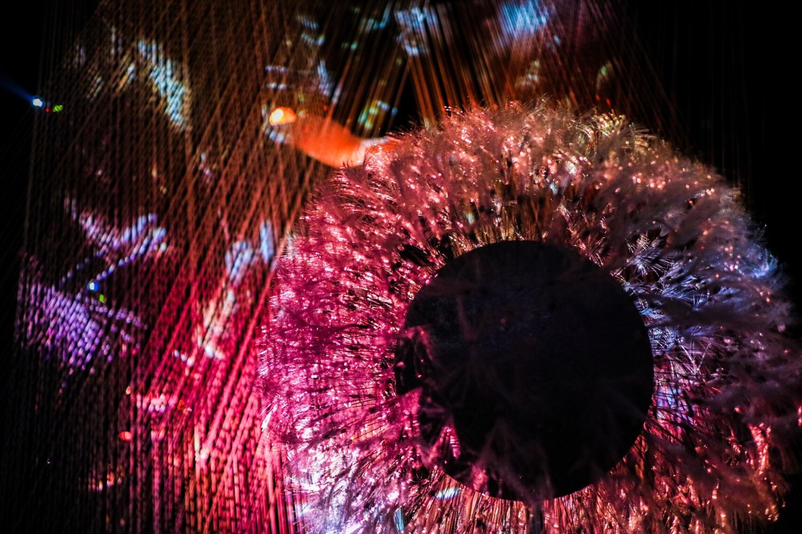
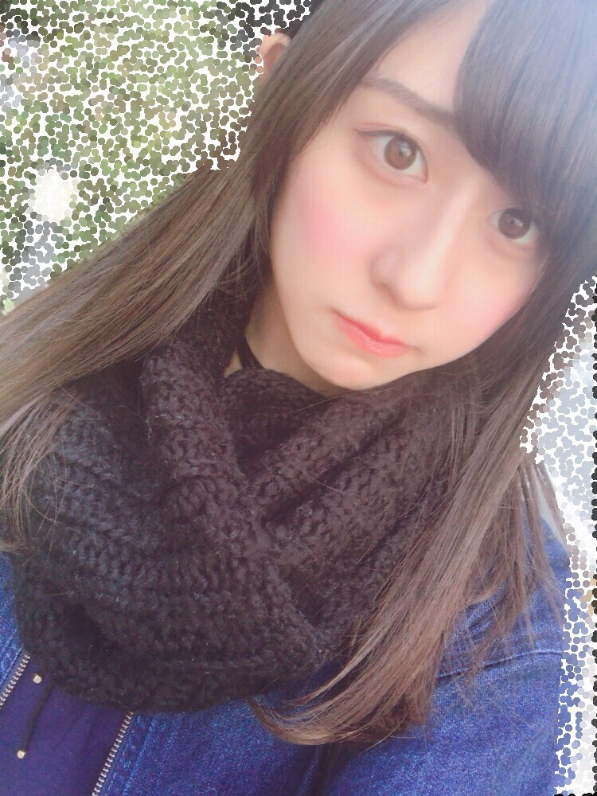

| 2017/03 10 Fri | 斎藤ちはる 雪と綿毛と |
今日は砂糖の日。
水戸の日。
サボテンの日。
ミントの日。
佐藤の日。
3月10日って色々とある！
語呂合わせしやすい日なのかもしれないですね◎
そして東京都平和の日。
都民の皆さんが平和について改めて考える日でもあるそうです。
私は埼玉県民なので都民ではないのですが
平和について考えることの大切さは
みんな一緒ですもんね。
争い事が無い世の中に生きたいです。
平和主義です。
斎藤家の歌も平和を謳っていますし。笑
今日は真面目な始まり方！
なので緩和するべく、唇ぶに。
---------------------------------------------------♡
昨日の #chihashot の続き！
昨日は桜モチーフがメインだったので
今日は少し毛色を変えて
雪やタンポポモチーフの写真を。
私はこういう風な
キラキラしているものが大好きなので、
この雪モチーフにしたオブジェが
素敵すぎてずっと見ていたかったヽ(；；)丿
繊細な雪の結晶も綺麗に再現されていて
本当に凄かった〜
家に飾りたいくらい...！！

色とりどりの映像が
綿毛に映って神秘的だった！
この大きな綿毛の下にある、
小さな綿毛に息を吹きかけたら
こんな風な色とりどりの映像が映るの。
私は1人でフゥ〜ってする勇気はなかったけど
周りの方がフゥ〜ってしてくれたので
バッチリ写真が撮れました◎
有難かったです...！
やっぱり、写真撮るの楽しい！
写真展がやりたい！
写真集も出したい！
目標です\( ˆoˆ )/
----------------------------------------------♡
♬ ChihaMusic
「ハルジオン」BUMP OF CHICKENさん
ハルジオンといえば咲く頃と、
私はこのハルジオンも思い出す。
春になるにつれて更に聴きたくなる。
歌詞では背の高い花の名前は出てこないけど
題名で初めて名前を知ることができる。
BUMPさんの曲をは題名で
ハッとすることが多くて
粋だな〜素敵だな〜ってよく思う。
あと一曲が起承転結のストーリーに
なってるのも大好き。
物語を読んでいるみたいで。
"枯れても 枯れない花が咲く
僕の中に深く 根を張る"
諦めない心、諦めきれない心。
ずっと胸に秘めておこうって思う。

早く春になってほしいな〜
と常々思う。
でも最近散歩がしやすい時期になってきて嬉しいっ
おやすみ
斎藤ちはる